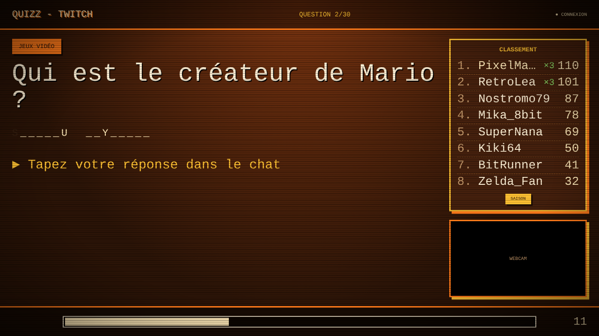
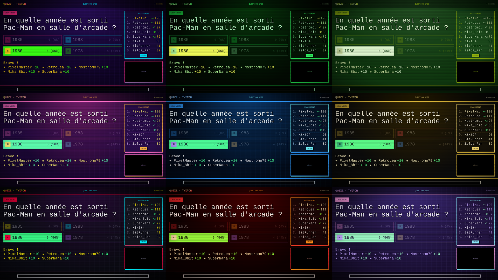
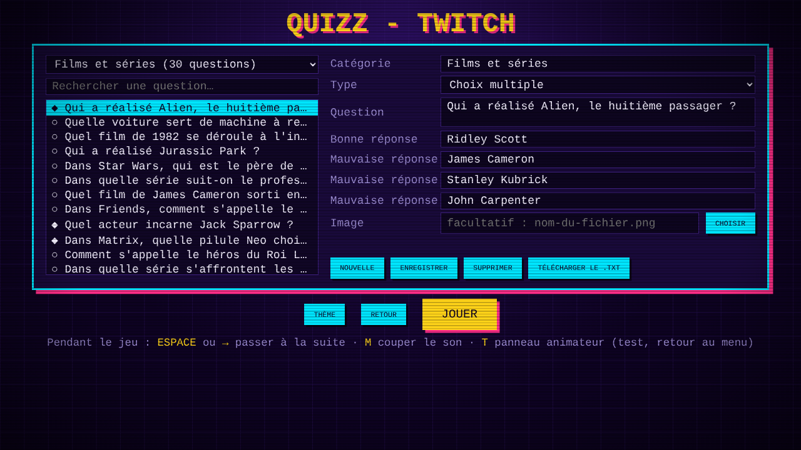

CE QUE FAIT LE JEU
300 QUESTIONS
Dix catégories fournies : littérature, science, sport, histoire, jeux vidéo, films et séries, géographie, musique, animaux, culture générale.
TROIS TYPES
Choix multiples, questions ouvertes et questions image, où la photo apparaît en gros pixels avant de devenir nette.
INDICES
Sur une partie des questions ouvertes, quelques lettres de la réponse apparaissent une à une. Chaque lettre coûte un point.
JOKER 50/50
Au hasard, deux mauvaises réponses disparaissent en pleine question. Ceux qui s'étaient trompés peuvent rejouer.
SÉRIES
Trois bonnes réponses d'affilée rapportent cinq points de bonus, et le classement affiche la série en cours.
SAISON
Les points se cumulent d'un live à l'autre. Un bouton bascule entre le classement de la partie et celui de la saison.
WEBCAM
Un cadre au format 16:9 est réservé sous le classement : il suffit d'y poser ta caméra dans OBS.
TOLÉRANT
Majuscules, accents, articles et petites fautes de frappe sont pardonnés. Le retard du stream est compensé.
EN LIVE DANS CINQ MINUTES
- Ouvre le jeu dans ton navigateur : Chrome, Edge ou Firefox, sur Windows, Mac ou Linux.
- Écris le nom de ta chaîne Twitch. Le voyant passe à « EN LIGNE » dès que le chat est lu.
- Charge le fichier
questions.txt, choisis une catégorie, un mode de jeu et un thème. - Dans OBS, capture la fenêtre du navigateur et pose ta webcam sur le cadre prévu.
- Clique sur JOUER. Tes spectateurs répondent dans le chat.
QUATRE FAÇONS DE JOUER
| MODE | PRINCIPE |
|---|---|
| Classique | Chacun pour soi. |
| Équipes | Rouge contre bleu, avec !rouge ou !bleu. |
| Chat contre streamer | Tu réponds au clavier, sans rien montrer à l'écran. |
| Mort subite | Une erreur élimine. Le dernier en jeu gagne. |
Et pour finir en beauté : une manche à mise, où chacun parie ses points avec !mise 20, ou une mort subite entre les trois meilleurs.

VINGT THÈMES
Arcade néon, terminal vert, console de poche, plateau télé des années 70, cyberpunk, film d'horreur… Choisis aussi ta police, ton titre et ton image de fond.

TES PROPRES QUESTIONS
Un éditeur intégré permet de chercher, modifier, ajouter et supprimer des questions sans quitter le jeu.
Tu peux aussi écrire directement dans le fichier texte, lisible par n'importe qui :
[Géographie]
Quelle est la capitale de l'Australie ? = Canberra
Le plus long fleuve d'Afrique ? = *Le Nil | Le Congo | Le Niger | Le Zambèze
[Drapeaux]
{japon.png} De quel pays est-ce le drapeau ? = Japon
# L'étoile marque la bonne réponse d'un choix multiple.
